Safari
Safari From giant deep-sea worms that can stretch an incredible 45 meters (148 feet) to antelopes that once roamed during the Ice Age, our planet is home to some truly astonishing, sometimes weird-looking animals. Imagine mice carrying genes from elephants, crabs with claws spanning up to 4 meters (13 feet), and rodents with the baffling ability to come back to life — offering scientists potential breakthroughs in treating heart attacks and Alzheimer’s.
In this article, the Angelino Adventures team will introduce you to some of the world’s strangest and extraordinary animals, each with its own story and bizarre adaptations. Whether hidden in the depths of the ocean or preserved in ancient fossils, these species invite us to marvel at the diversity of life on Earth and see our planet with fresh eyes.
Uakari
- Habitat: Tropical forests of the northwestern Amazon lowlands in South America, including western Brazil, southern Colombia, and eastern Peru.
- Unique feature: Bright red face.
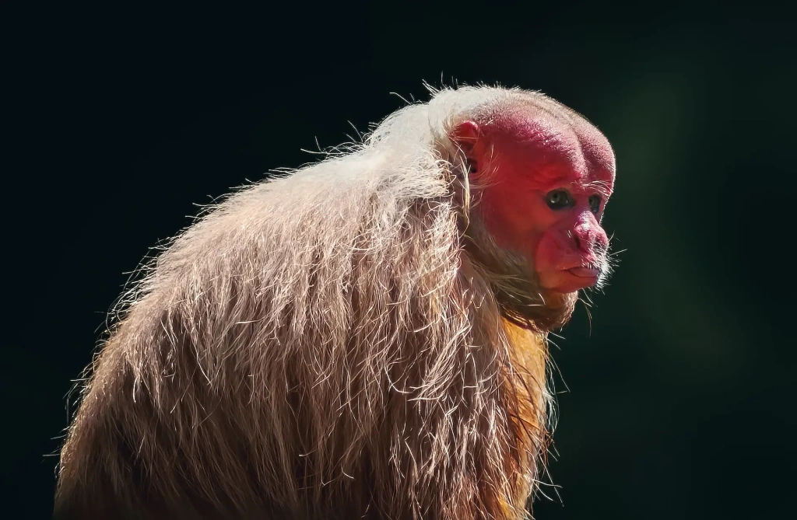
Uakaris are rare primates native to South America, easily recognized by their short tails, shaggy coats, and almost human-like ears. Their most striking feature, however, is a smooth, bright red face that shifts in color with the animal’s mood and health.
This unusual color has nothing to do with pigmentation — in fact, the uakari has very little of it. Instead, its skin is stretched over a dense network of blood vessels, so when the animal is emotionally aroused, its face flushes a deep scarlet. According to a study published in the journal Royal Society Open Science, this vivid hue also serves as a sign of good health:
“The skin of the face of the bald uakari monkey allows a direct external assessment of haematological status, suggesting that the colour of the face would be an honest indicator of health, but could also signal sexual or behavioural states”.
Another distinctive trait of this species is its unusually short, rigid tail, which plays no role in movement or gripping branches. Such a feature is rare for tropical forest primates. Despite their limited range, bald uakaris are currently classified as a species of least concern, with a stable population showing no signs of rapid decline.
Pink river dolphin
- Habitat: Rivers and flooded forests, including the Amazon, Orinoco, Rio Negro, Madeira, and other major river systems of South America.
- Unique feature: Pink coloration that deepens with age.
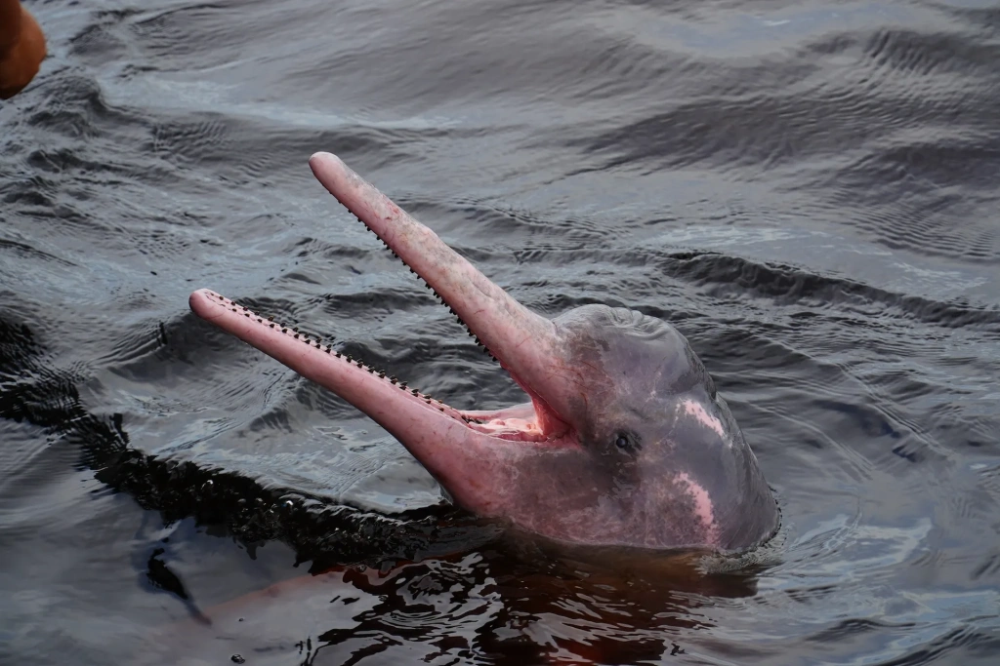
The pink river dolphin (Inia geoffrensis) is among South America’s most mysterious animals. According to National Geographic, its rosy hue comes from scar tissue left by battles during mating season. The more scars a dolphin bears, the deeper its pink coloration and the better its chances of attracting a mate.
Unlike their marine relatives, these dolphins can turn their heads nearly 90°, thanks to unfused cervical vertebrae. In the Amazon jungle, this flexibility is essential for navigating waters crowded with submerged trees and tangled roots. Their long, narrow snout helps them search for fish among branches and dig crustaceans out of the river mud. Echolocation guides them through the murky waters with ease.
Siphonophore
- Habitat: The open ocean, at depths ranging from 200 to 1,000 meters (660 to 3,280 feet). Some species dive as deep as 4,000 meters (13,120 feet), while others come closer to the surface at night.
- Unique feature: A colonial “body” composed of individual but interdependent organisms.
, making it arguably the longest living creature known. Image source: SciTech Daily / YouTube")
The siphonophore is one of the planet’s most unusual creatures. Rather than being a single organism, it’s a colony of hundreds of individuals fused together, resembling a giant worm or snake. Each member has a specialized role: some catch prey, others digest it, some handle movement, and others take care of reproduction. Yet, despite this division of labor, they all work together as one living organism.
Many siphonophores can produce light through bioluminescence, often glowing with the cool blue hue typical of many deep-sea creatures. But there are exceptions. For instance, according to the Science journal, the genus Erenna emits red light, which is rare at ocean depths where most creatures can’t see red.
These creatures aren’t entirely harmless either. Their tentacles are lined with tiny, amoeba-like extensions called tentilla that act like bait, flickering to lure prey. When something gets too close, the tentacles deliver a swift, venomous sting.
In 2020, researchers exploring an underwater canyon off Australia’s west coast recorded one of the longest siphonophores ever found at a depth of about 600 meters (1,970 feet). This spiral-shaped creature measured an estimated 45 meters (148 feet) long, making it the longest individual ever documented, far surpassing even the size of a blue whale.
Star-nosed mole
- Habitat: Swamps, peat bogs, wet meadows, overgrown shores of lakes and streams, as well as swampy forests, from southern Canada (Ontario, Quebec) to the northeastern United States.
- Unique feature: A sensitive star-shaped nose with 22 movable tentacles.
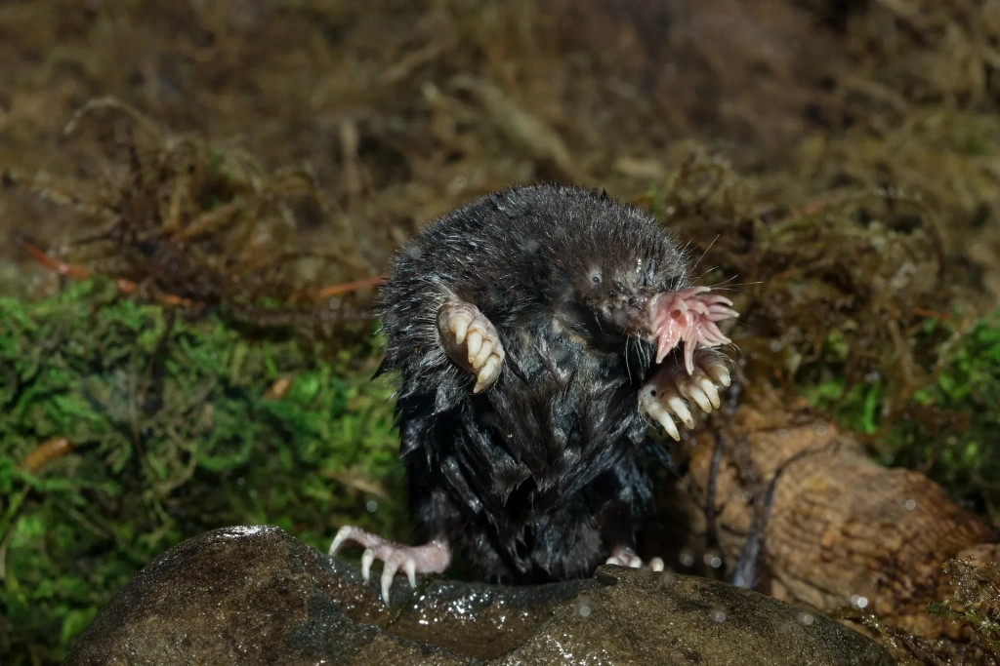
The nose of this tiny creature is encircled by 22 fleshy tentacles, forming what looks like a living star. They aren’t for breathing or smelling, but serve as an ultra-sensitive touch organ, one of the most sensitive in the entire animal kingdom. Every contact with this “star” sends signals to the mole’s brain through 100,000 nerve fibers, giving it five times more sensory receptors than a human hand — all packed into a nose the size of a grain of rice!
“The star moves so quickly that you can't see it with your naked eye. A high-speed camera revealed that the star touches 12 or more areas every second,” explains Kenneth C. Catania, professor of biological sciences at Vanderbilt University.
Weighing just 50 grams (about 1.8 ounces), roughly twice as much as a common mouse, this tiny creature is unique among the world’s 39 mole species. Unlike its relatives, it lives not underground but in swamps and wetlands. It’s adapted to hunt underwater, holding its breath while searching for food. In a damp, slippery environment where prey hides quickly, its unusual nose helps it instantly detect and catch everything from larvae to crustaceans.
Neurobiologist Diana Bautista, who studies this unique organ, discovered molecules that convert all types of touch, from light to painful, into electrical signals. These signals are the foundation of how the nervous system works. Many of these molecules are also found in the human body, and understanding how this animal’s nose functions could one day lead to new painkillers or treatments for chronic pain.
Pacific barreleye fish
- Habitat: The northern part of the Pacific Ocean, from the Bering Sea through Japan to Lower California, at depths of about 600 to 800 meters (1,970 to 2,625 feet).
- Unique feature: A transparent skin revealing tubular eyes that can rotate both upward and forward.
When people mention the “barreleye fish,” they’re usually referring to Macropinna microstoma, a small, unusual creature known for its distinctive eyes. They look like two green barrels, pointed upward beneath a translucent skin on top of their heads. This unique structure helps the fish spot prey, small crustaceans caught in siphonophore tentacles, and quickly respond to threats from above.
This deep-sea dweller was first described in 1939, but it wasn’t until 2004 that scientists finally managed to film it. Five years later, researchers at the Monterey Bay Aquarium Research Institute (MBARI) confirmed that its eyes can move independently inside a fluid-filled capsule. This unique system protects the fish from the venomous tentacles of siphonophores, which it often competes with for food.
Dugong
- Habitat: Warm coastal waters from East Africa to Australia, including the Red Sea, Indian Ocean, and Pacific Ocean.
- Unique feature: The only fully marine herbivorous mammal in the world.
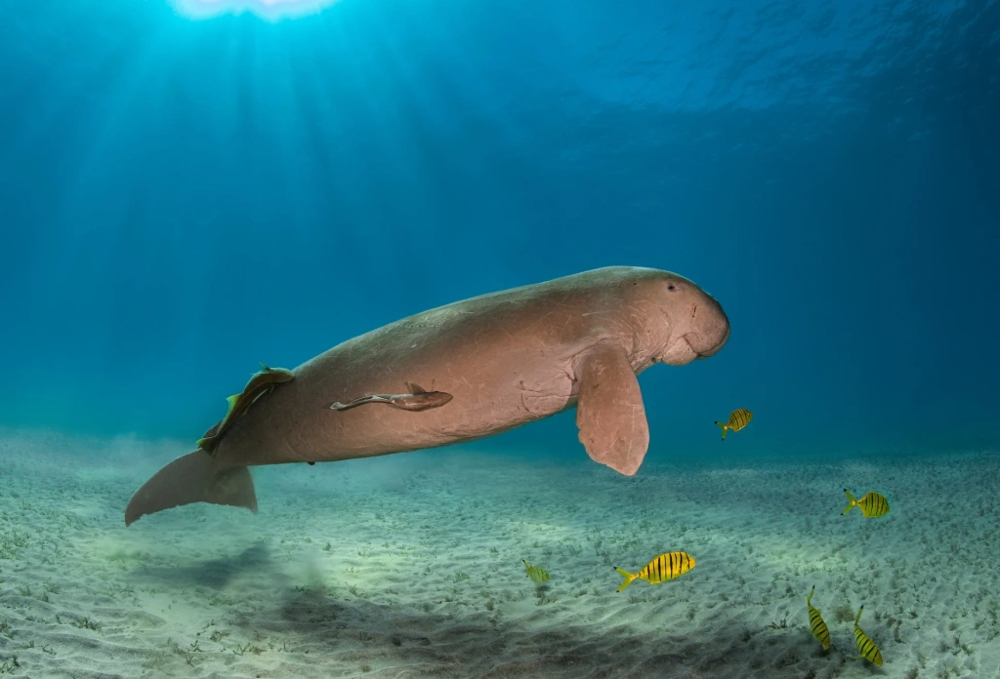
The dugong is a marine giant that feeds exclusively on vegetation. It’s the last living member of the Dugongidae family, closely related to manatees and a distant descendant of elephants. What makes the dugong truly unique is that it’s the only fully herbivorous aquatic mammal still alive today. Sea cows (Hydrodamalis) once shared this trait but are now extinct.
An adult dugong can weigh up to 400 kg (about 880 lbs), reach lengths of around three meters (10 feet), and live up to 70 years. Despite its size, its brain is relatively small: about 300 grams (0.66 lbs), just 0.01% of its body weight. While not the smartest ocean dweller, it has an excellent memory for food-rich areas and often returns to them after long migrations.
Underwater, these giants can hold their breath for up to six minutes. Sometimes they even “stand on their tails,” sticking their heads out of the water to breathe. Baby dugongs soothe themselves by sucking on their fins and enjoy hiding under their mother’s fin or sitting on her back.
Gerenuk
- Habitat: Dry, shrub-covered areas of East Africa.
- Unique feature: A long neck resembling that of a giraffe, as well as the ability to stand on its hind legs.
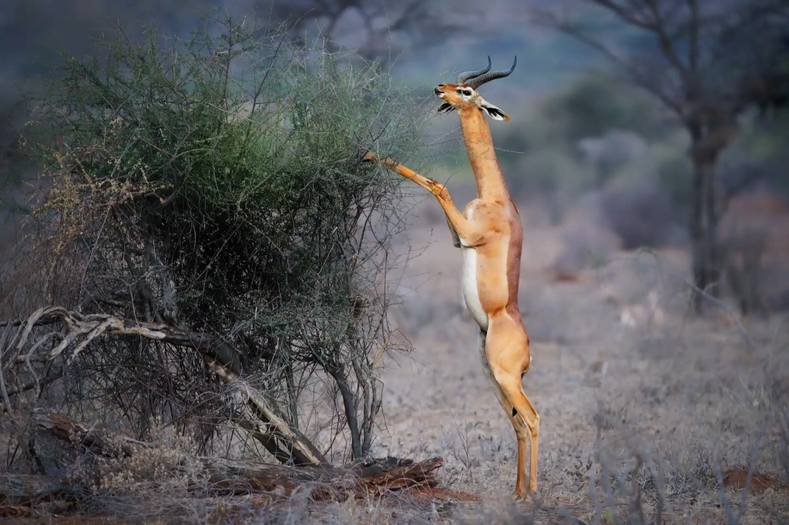
The gerenuk is a slender antelope that looks like a gazelle but belongs to the genus Litocranius. Although European scientists only discovered the gerenuk in 1898, its image appears in Egyptian art dating back to 5600 BCE. The name comes from Somali and means “with a giraffe’s neck.”
Gerenuks are found only in East Africa, inhabiting dry shrublands and acacia groves in Kenya, Ethiopia, and Tanzania. In these arid savannas, many herbivores must make do with sparse vegetation — and the gerenuk shows remarkable adaptability. To reach the tops of bushes and tree leaves, it stands on its hind legs and stretches its long neck. Its unique anatomy, including modified lumbar vertebrae, strong legs, and wedge-shaped hooves, allows it to maintain this stance for long periods without support.
Japanese spider crab
- Habitat: Deep waters off the coast of Japan, mainly near the southern and central shores of Honshu Island, as well as in Suruga Bay, one of its main habitats. It is also found near the coasts of Kyoto, Osaka, and around the Izu Peninsula.
- Unique feature: Very long limbs, with a span that can reach almost 4 meters (13 feet).
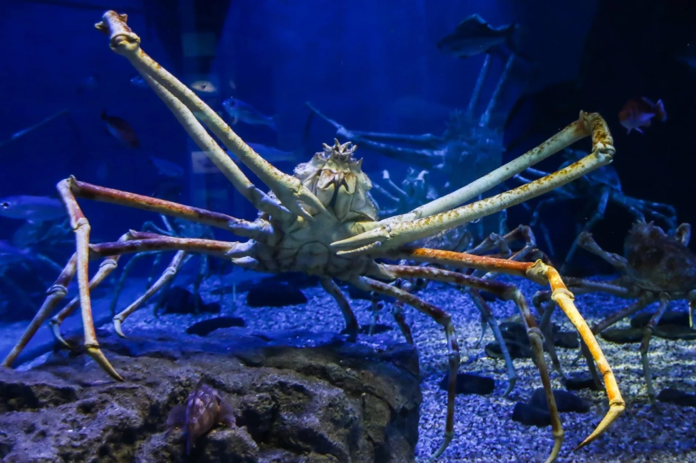
Out of more than 60,000 crab species on Earth, the Japanese spider crab (Macrocheira kaempferi) is the largest. Its front claws can span an impressive 3.8 meters (about 12.5 feet), making it one of the biggest arthropods — creatures without backbones, with hard external skeletons and jointed limbs. Like all crabs, it has ten limbs.
This species lives in the cold, deep waters off Japan and is primarily nocturnal, preying on small fish and mollusks. It’s also remarkably long-lived, with a lifespan of up to 50 years. Interestingly, once it reaches adulthood, its shell stops growing, but its claws continue to lengthen throughout its life.
Okapi
- Habitat: The Ituri tropical forests in Congo.
- Unique feature: A combination of external traits of both a giraffe and a zebra.
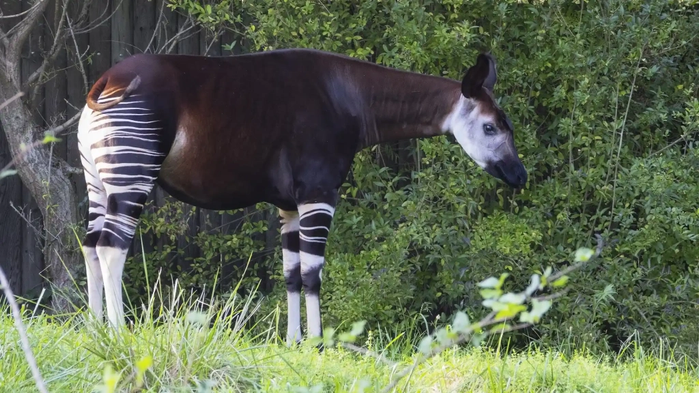
The okapi (Okapia johnstoni), or forest giraffe, is a rare resident of tropical forests and the only living member of the giraffe family found outside the savannas. It blends the traits of several animals: a body shaped like a horse, black-and-white striped legs like a zebra, and a head and long tongue that reveal its close relationship to the giraffe, its nearest relative.
The stripes on its legs serve more than just camouflage; they help calves navigate dense forest undergrowth. Each okapi has a unique stripe pattern, which helps young avoid losing sight of their mothers.
Research at the San Diego Zoo and White Oak Conservation in Florida has shown that okapis can produce and detect infrasound below 20 Hz, frequencies inaudible to humans. Another distinctive trait is the scent glands on the soles of their feet, which they use to mark territory.
Spanish dancer
- Habitat: Tropical waters of the Indo-Pacific region, from the Red Sea to Australia, Japan, and Hawaii. Sometimes found in the Mediterranean Sea. It lives at depths up to 50 meters (about 165 feet), mainly in coral reefs.
- Unique feature: Bright coloration and wave-like movements while swimming that resemble a flamenco dance.
The Spanish dancer (Hexabranchus sanguineus) is a huge sea slug whose smooth, flowing movements resemble a flamenco dance — hence its name. It usually glides slowly over coral reefs. When threatened, it vigorously undulates its six prominent gills and other body extensions. Its vivid colors serve as a clear warning to predators.
A nocturnal creature, the Spanish dancer spends its days tucked into reef crevices or beneath coral overhangs. At night, it emerges to feed, primarily on sea sponges and other small invertebrates.
This sea slug, though harmless to humans, is slightly toxic to predators and can grow up to 60 cm (about 24 inches) long, roughly the length of a human arm. Tiny shrimp (Periclimenes imperator) are often found riding on its body, using the slug for transport and shelter while cleaning it of parasites in return. This kind of cooperation is common among marine invertebrates.
Nano-chameleon
- Habitat: Mountainous tropical forests of northern Madagascar.
- Unique feature: Its tiny size: it is the smallest known chameleon and one of the smallest vertebrates in the world.
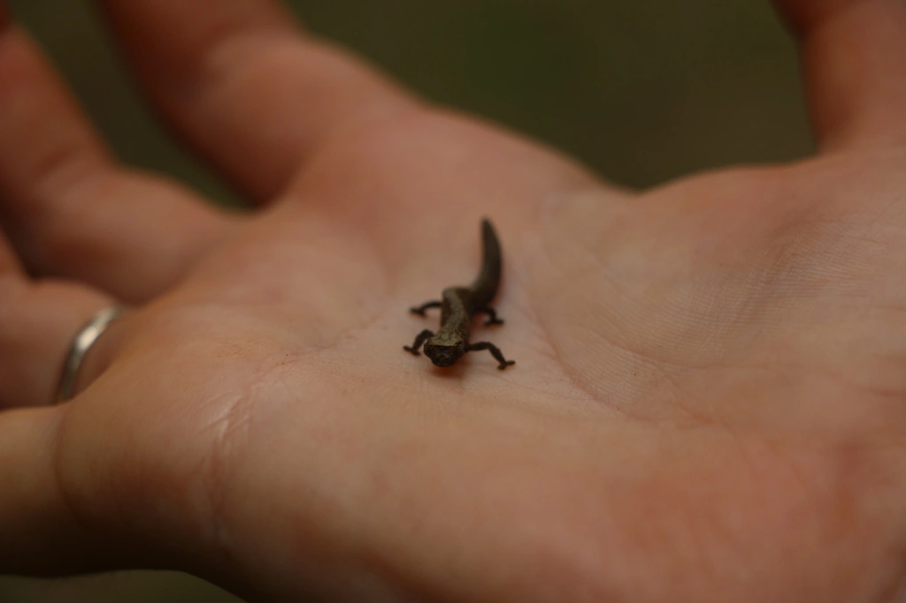
In 2021, a team of herpetologists led by Frank Glaw officially described a tiny lizard discovered in the mountains of northern Madagascar, naming it Brookesia nana. The male measures less than 14 mm (0.55 in) from snout to cloaca, and just 21.6 mm (0.85 in) including the tail. Females are slightly larger, reaching about 29 mm (1.14 in).
Although the formal description appeared in the journal Scientific Reports in 2021, the species was first found in 2012 during an expedition to the Sorata Mountains. In the years that followed, scientists compared specimens, conducted genetic analyses, and took detailed measurements before confirming it as a new species.
Brookesia nana may be the smallest reptile and possibly the smallest lung-bearing vertebrate on the planet. Its main rival for the title is Brookesia micra, another dwarf chameleon described in 2012, famously photographed perched on the head of a matchstick.
Mimic octopus
- Habitat: Coastal waters of the Indo-Pacific, including the shores of Indonesia, the Philippines, Malaysia, and northern Australia. It favors shallow areas with soft or sandy bottoms, rich in corals and marine plants.
- Unique feature: The ability to mimic with astonishing accuracy the appearance and behavior of various marine animals.
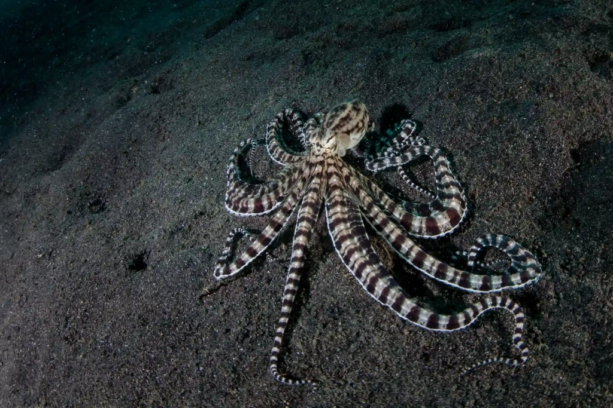
The mimic octopus (Thaumoctopus mimicus) is a master of disguise in the marine world. Unlike most animals that mimic just one species, it can imitate a variety of creatures and switch between them instantly. It’s believed to mimic over 15 marine species, from venomous snakes to jellyfish, flatfish, and crabs. This incredible versatility likely helps protect it, especially during the day when it hunts in open sandy shallows and is most vulnerable.
Not everyone agrees with the popular claims about its abilities. American biologist and aquarist Jay Hemdal, who has studied the mimic octopus in captivity, questions whether it can truly imitate all 15 species. In one of his papers, he notes that in a tank, the octopus mostly mimics only a few animals, and its behavior is more adaptable and situational than strictly programmed. According to Hemdal, the number 15 is more a media-friendly simplification than a proven fact. For Thaumoctopus mimicus, mimicry is a flexible blend of poses, shapes, colors, and movements meant to confuse predators rather than precise copies of many different creatures.
Axolotl
- Habitat: Lake Xochimilco and its network of canals in the southern part of Mexico City, Mexico.
- Unique feature: The ability to regenerate not just external body parts but also internal organs, including the heart and brain.
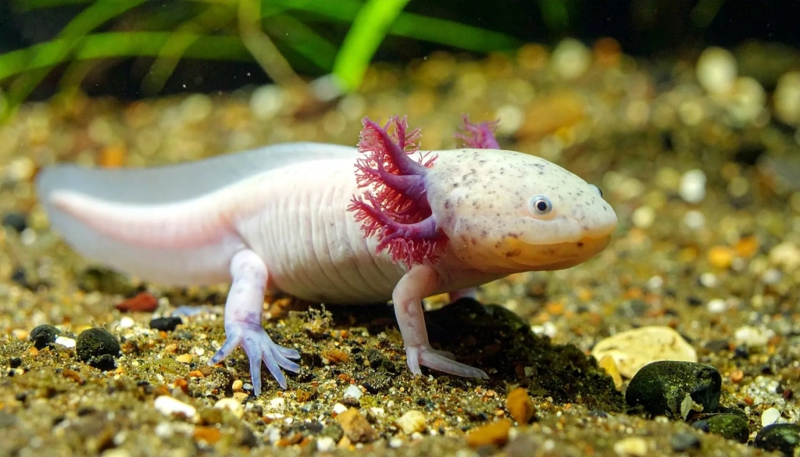
The axolotl’s uniqueness lies in its extraordinary regenerative abilities: it can regrow lost limbs, its tail, and, in some cases, even parts of the heart and brain. Scientists are studying this amphibian’s cells to learn how similar mechanisms might be triggered in humans. For example, research led by Karen Echeverri at the Marine Biological Laboratory in Woods Hole, USA, found that tail regeneration in axolotls is controlled not only by local cells at the injury site but also by neurons from the brain.
"Sometimes we think about injury and regeneration as just the response locally at the injury site, what is happening in the cells there, and we forget that everything in our body is actually controlled by our brain," Echeverri says. "What happens in our brain might be the difference between what happens in a human in tissue that regenerates, like the liver, or doesn't regenerate, like most other organs."
This weird animal quite literally refuses to age. Unlike typical salamanders, it never completes its maturation cycle, keeping its larval features for life, a rare phenomenon known as neoteny. The axolotl remains fully aquatic and retains its external gills, yet also has lungs and breathes through its skin — a versatile combination for life in the water.
Sadly, wild axolotls are on the brink of extinction. The International Union for Conservation of Nature (IUCN) estimates that only about 50 to 1,000 individuals remain. The population is declining rapidly, and the species is now officially listed as critically endangered.
Snapping shrimp
- Habitat: Warm and temperate marine waters worldwide, including the Indo-Pacific region, the Atlantic Ocean (Caribbean Basin, Gulf of Mexico), and the Red Sea.
- Unique feature: A large claw capable of snapping shut lightning-fast, creating a powerful bubble that acts like a “bullet.” The snap sound is louder than a gunshot, and the temperature inside the bubble is almost as hot as the Sun.
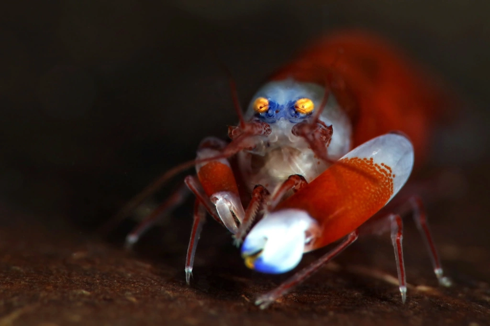
Meet the pistol shrimp from the Alpheidae family, a shrimp no bigger than a matchbox but packing a powerful punch. One of its claws hides a remarkable mechanism that snaps shut with such force it creates a , stunning its prey instantly.
When the pistol shrimp fires, the sound can reach 210 decibels, louder than a gunshot, and the temperature inside the bubble spikes to 4,400 °C (7,952 °F). During World War II, the rapid clicks of these shrimp puzzled US Navy sonar operators, who initially mistook them for enemy submarines. Eventually, recordings of the shrimp’s sounds were made so operators could tell the difference between biological noise and real threats.
Only the larger claw serves as the shrimp’s weapon. But if it’s damaged or lost, the smaller claw quickly takes over. It begins to grow, changes shape, and soon transforms into a new strike-ready weapon.
Hero shrew
- Habitat: Humid tropical forests of Central and East Africa, with the main range centered in the Congo.
- Unique feature: Able to carry loads nearly 1,000 times its weight.
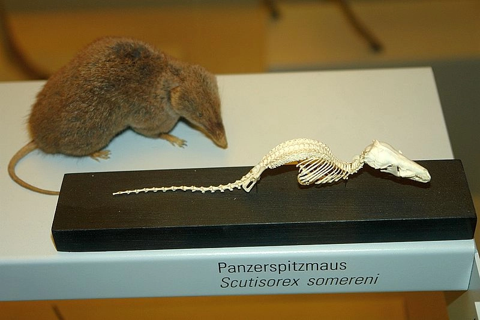
This small animal from the Congo River basin, just 12–15 cm (4.5–6 in) long and weighing 70–115 g (2.5–4 oz), is known as the “hero” or “armored shrew” (Scutisorex somereni), thanks to a spine unmatched in strength among mammals.
In 2019, a team led by Stephanie Smith from the Field Museum of Natural History in Chicago used X-ray scans to study the species. They found that, unlike other shrews with the usual 5–6 lumbar vertebrae, this one has 11. These vertebrae are joined by an intricate system of interlocking bony projections, forming a spine like a solid column.
The Mangbetu people of Central Africa believed that parts of this shrew’s body could grant strength, and many wore these parts as amulets. During an expedition to the Congo in the 1910s, locals demonstrated the species' resilience to naturalists Herbert Lang and James Chapin: a man weighing 72 kg (160 lbs) stood on the shrew with one foot and remained there for some time, yet the animal survived.
Studying these shrews in the wild is extremely challenging. They are shy, and much of their range lies within the Congo, where decades of armed conflict have made field research difficult.
Hairy frog
- Habitat: Mountainous and humid tropical forests in Central and West Africa.
- Unique feature: When threatened, it can break the bones of its fingers, pushing them through the skin, turning them into claws used for defense.
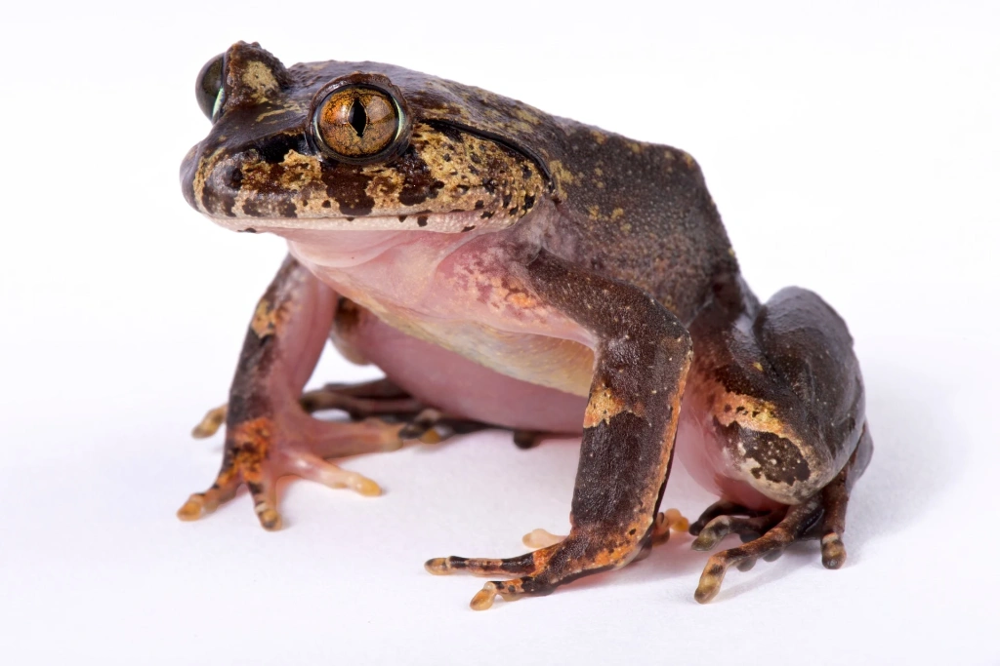
The hairy frog (Trichobatrachus robustus) is a remarkable resident of Central African swamps. During the breeding season, males develop thin, hair-like skin projections along their sides and thighs. These aren’t actual hairs but vascular dermal papillae, essentially “lungs” on the body’s surface, that expand the respiratory area while the male guards his eggs underwater.
Its most unusual feature, however, is a built-in weapon. When threatened, the frog can deliberately break the bones in its fingers and push them through the skin as sharp claws. Once the danger has passed, the claws retract and the skin heals quickly.
Platypus
- Habitat: Freshwater bodies of eastern Australia and on the island of Tasmania.
- Unique feature: It combines traits of birds, aquatic animals, and even reptiles.
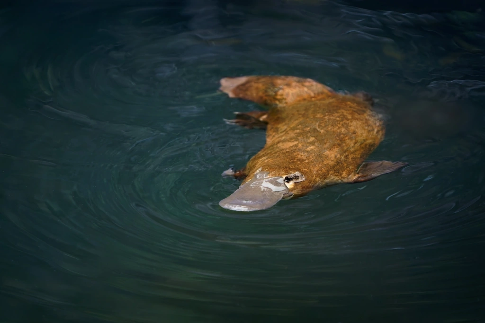
The platypus (Ornithorhynchus anatinus) is often called one of the most unusual and weirdest animals in the world, blending traits of mammals, birds, and even reptiles. It lays eggs like snakes, has a duck-like bill, and sports webbed feet for swimming. Males possess venomous spurs on their hind legs, a rare feature among mammals. While the venom isn’t fatal to humans, it causes intense pain and rapid swelling.
Another remarkable feature of the platypus is its electroreceptive bill, which helps it detect prey underwater. Its diet consists mainly of insects, larvae, mollusks, and worms, scooped up from the bottom along with gravel and silt. Lacking teeth, it uses small stones stored in its cheek pouches to grind its food.
This weird animal is the product of millions of years of evolution and adaptation to an aquatic lifestyle — a “living window” into the ancient history of mammals, preserving strange traits that have disappeared in most other species.
Fitzroy River turtle
- Habitat: The Fitzroy River system in Queensland state, in northeastern Australia.
- Unique feature: the ability to breathe through its skin and the mucous membranes of the rear part of its body, including through the cloaca.
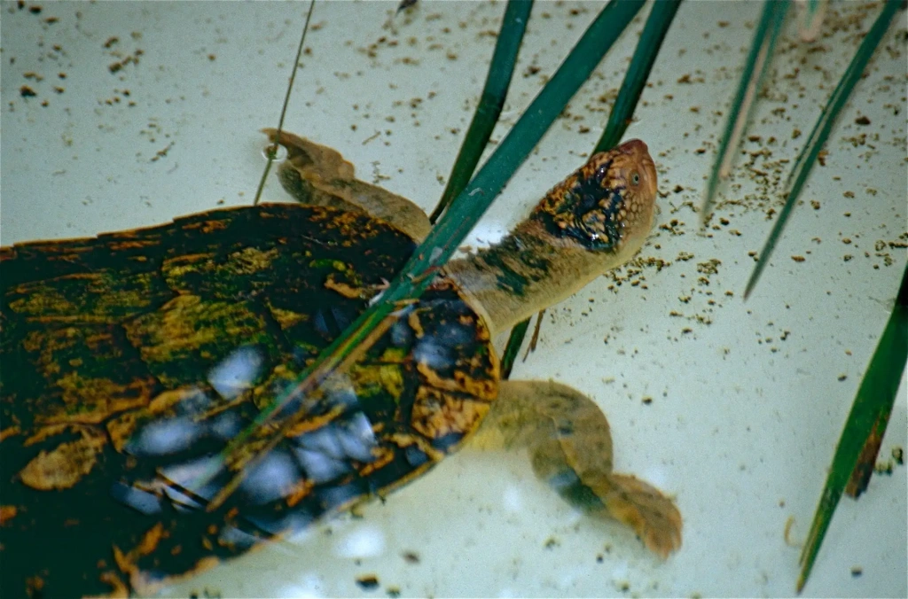
The Fitzroy River turtle (Rheodytes leukops) is a rare freshwater species found in the rivers and streams of northeastern Australia. To cope with fast-flowing waters, it has a flat, smooth shell about 25 cm (10 inches) long, which helps it withstand strong currents.
Its most remarkable trait is the ability to breathe through its skin and mucous membranes, absorbing oxygen directly from the water. This allows the turtle to remain submerged for several days, or, according to some reports, up to three weeks. Technically, this “underwater breathing” happens through the cloaca, a multipurpose opening used for reproduction, egg-laying, and waste elimination.
Saiga antelope
- Habitat: Steppes and semi-deserts of Central Asia, mainly in Kazakhstan, Russia (Kalmykia and Astrakhan region), Mongolia, and Uzbekistan.
- Unique feature: A long, slightly drooping nose with large nostrils that filter dust in winter and cool inhaled air in summer.
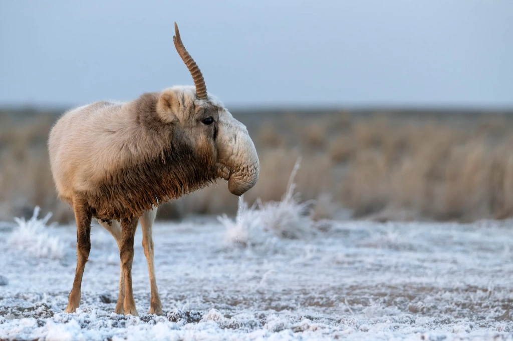
The most distinctive feature of the saiga antelope (Saiga tatarica) is its large, drooping nose — a unique adaptation to the harsh steppes of Central Asia and Eastern Europe. Its swollen snout with downward-facing nostrils warms and moistens inhaled air, enhancing the animal’s sense of smell.
Male saigas weigh around 40 kg (88 lbs), while females are lighter at 25–30 kg (55–66 lbs). Despite their odd physical appearance, they can reach speeds of up to 80 km/h (50 mph) during migrations. The species dates back to the Ice Age. In the last century, more than two million roamed the region, but numbers plummeted sharply in the late 20th century. Now, however, the population is rebounding. Aerial surveys in 2024 recorded over 2.8 million saigas in Kazakhstan, 48% more than in 2023 and far above the 21,000 counted in 2004. As a result, the International Union for Conservation of Nature (IUCN) has upgraded the species’ status from “endangered” to “near threatened.”
Chinese water deer
- Habitat: East Asia, primarily in China and on the Korean Peninsula. In some areas, including the United Kingdom and parts of Europe, the species has been introduced and formed stable populations.
- Unique feature: Males possess long, sharp canine teeth (tusks) that protrude from the mouth, giving them a distinctive and somewhat fearsome appearance.
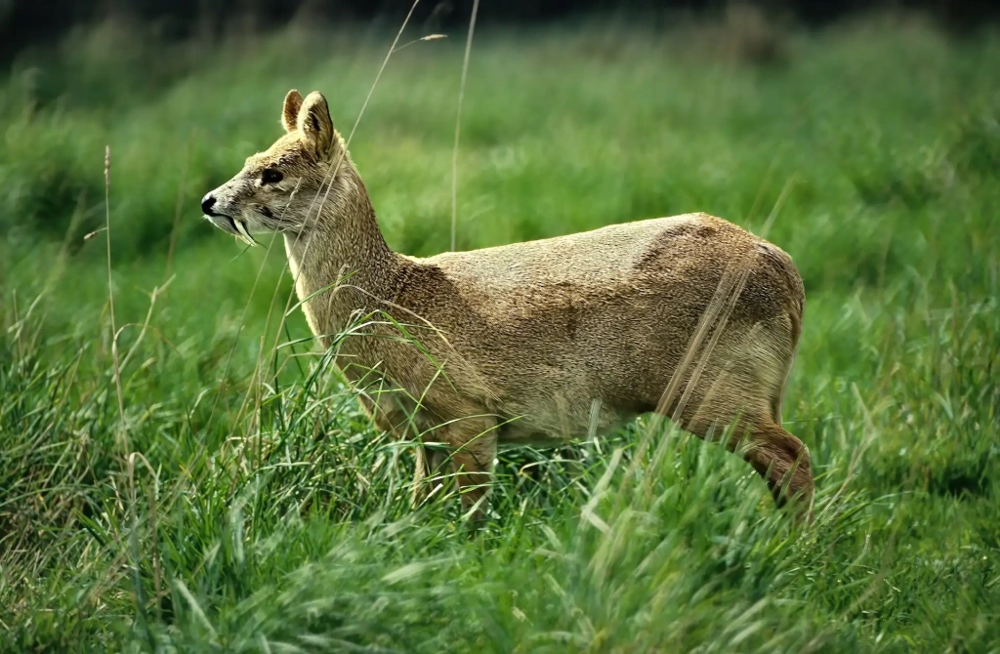
The Chinese water deer (Hydropotes inermis) is an unusual member of the deer family native to East Asia. Unlike most deer, it completely lacks antlers, but males sport long, curved tusks. When grazing, the deer instinctively tilts or tucks the tusks slightly backward to avoid injury.
"The ancestors of all deer were small and had tusks and antlers," Jen Webb, a carnivore keeper at Zoo Atlanta, explains to National Geographic.
During evolution, taller deer species "grew larger antlers and lost the tusks, while smaller deer retained the tusks but kept small antlers," says Webb.
The tusks of the water deer serve more than just appearance. Males use them to fight for territory, court females, fend off predators, and display their strength and status. These deer live in coastal plains and reed beds, where food is abundant and cover is easy to find. They’re also strong swimmers, often crossing rivers and lakes in search of fresh grazing areas.
Maned wolf
- Habitat: Found in the savannas and grassy steppes of Brazil, Paraguay, eastern Bolivia, northern Argentina, and, less commonly, Peru.
- Unique feature: Notable for its long, slender legs and a fox-like appearance.
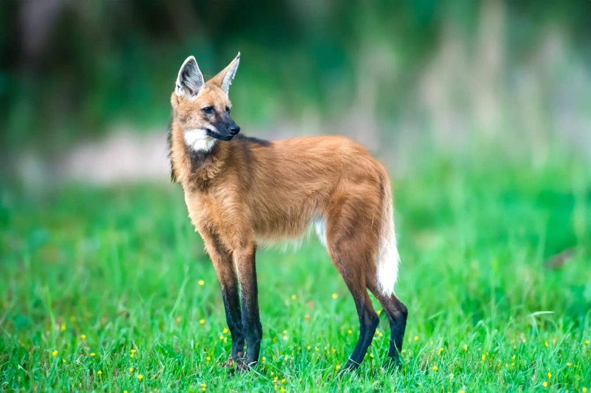
The maned wolf (Chrysocyon brachyurus), also called the mongoose wolf or yellow wolf, is a rare and striking predator native to South America. With its reddish coat, bushy tail, large ears, and remarkably long, slender legs, it is well adapted for moving through the tall grasses of savannas and open woodlands. Those long legs not only help it run with ease but also allow it to move quietly and spot prey in dense vegetation.
Despite the name, it is not closely related to true wolves. In fact, it is the only species in the genus Chrysocyon, following its unique path in the wild. Its diet is diverse, ranging from rodents, birds, and insects to various fruits. Socially, the maned wolf is a solitary animal. Males and females meet only during the breeding season. For the rest of the year, they keep their distance and mark their territories.
Lowland streaked tenrec
- Habitat: Humid lowland tropical forests of northeastern Madagascar, found at elevations up to 1,550 meters (5,085 feet).
- Unique feature: Special stiff spines that can be rubbed together to create sounds for protection and communication.
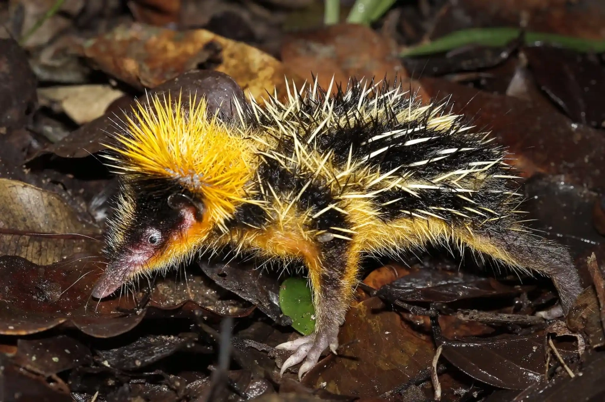
In the tropical forests of Madagascar lives one of the island’s strangest residents, the striped tenrec (Hemicentetes semispinosus). This creature somehow resembles a hedgehog, a bumblebee, and a zebra all at once. With its bold black-and-yellow pattern, a body just 14 centimeters (5.5 inches) long, and a weight of barely 200 grams (7 ounces), it draws attention not only for its weird appearance but also for an extraordinary talent: it is the only known mammal capable of producing a chirping sound similar to a cicada.
Unlike most animals that use their voice, the striped tenrec creates these sounds by rubbing special dorsal spines together. Between 7 and 16 modified quills vibrate against each other to generate signals ranging from 2 to 80 kHz, and sometimes up to 200 kHz. Most of these high frequencies are beyond human hearing, but other tenrecs can detect them from as far as 10 meters (35 feet) away. This method of sound production, called stridulation, is the same mechanism used by crickets — though instead of rubbing wings, the tenrec uses its spines.
Scientists believe these signals may help mothers keep in contact with their young or serve to deter predators, though this remains unconfirmed. The striped tenrec also compensates for its poor eyesight with a form of echolocation, clicking its tongue and listening to the echoes to navigate around obstacles. Much about its life is still unknown, as tenrecs remain among the least studied mammals.
Mantis shrimp
- Habitat: Tropical and subtropical coastal waters of the Indo-Pacific, favoring shallow reefs, mangrove thickets, and sandy or muddy seabeds.
- Unique feature: Powerful claws that strike with such force and speed they create cavitation bubbles.
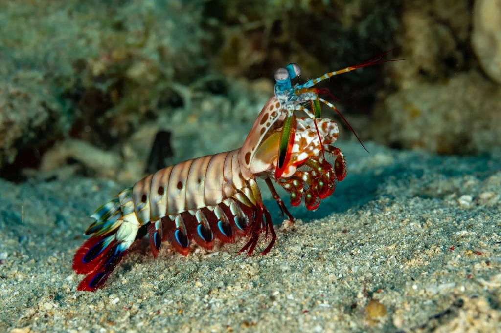
Imagine a creature with stalked eyes, the reflexes of a snake, and a claw that can pierce armor. This is the mantis shrimp, or stomatopod (Stomatopoda). Despite the name, it is neither a shrimp nor a mantis, but a member of an ancient lineage of marine predators that has thrived for over 400 million years. Related to crabs and lobsters, mantis shrimps are far more aggressive.
They are best known for their incredible strike, among the fastest and most powerful in the animal kingdom. Each claw functions like a biomechanical catapult, equipped with a special latch and an elastic “spring” inside the joint. As the muscles tense, energy builds up until the latch releases, sending the claw snapping forward at speeds of up to 23 meters per second (about 75 feet per second). The blow can shatter a crab’s shell or crack open a mollusk. But the impact doesn’t end there: the strike also generates a cavitation bubble, and when that bubble collapses, it delivers a secondary shockwave strong enough to stun or kill prey without a direct hit.
Yet another outstanding feature of the mantis shrimp is its vision. Its eyes can move independently, giving it an exceptional field of view. While humans have just three types of photoreceptors, mantis shrimps have between 12 and 16, allowing them to detect ultraviolet light, the full range of visible colors, and even parts of the infrared spectrum. This extraordinary visual system helps them navigate murky waters, track the slightest movements of prey, and detect reflections from transparent surfaces.
In addition to their strength and eyesight, mantis shrimps are skilled navigators. Research by neurobiologist Rickesh Patel of the University of Maryland has shown that they can remember the route to and from their burrows. In the process, mantis shrimps use a sophisticated mix of cues: familiar landmarks, the position of the sun, patterns of polarized light, and their internal sense of direction.
Naked mole-rat
- Habitat: Eastern Africa, in the semi-deserts and dry savannas of Ethiopia, Kenya, Somalia, and Tanzania.
- Unique feature: Remarkable resistance to low oxygen levels, cancer, and cardiovascular diseases.
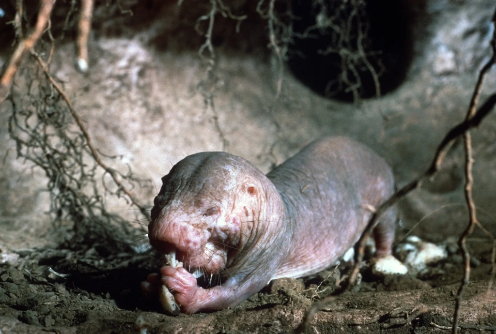
The naked mole-rat (Heterocephalus glaber) is a small, hairless rodent with a social structure more similar to an ant colony than a typical mammal.
According to Professor Chris Faulkes of Queen Mary University of London, these weird animals live underground in large colonies of several dozen members. A single female, the queen, and a few males handle reproduction, while the remaining members act as “workers” and do not reproduce, since there are no unrelated mates within the colony.
Scientists are particularly fascinated by the naked mole-rat’s biology rather than its social behavior. Living in tunnels with very little oxygen, these rodents can survive without air for up to 18 minutes. During this time, they appear to “die,” switching to an emergency metabolism that uses fructose instead of glucose to keep the heart and brain functioning, then literally comes back to life unharmed. In addition, naked mole-rats can live for several decades and show remarkable resistance to cancer, heart attacks, and other age-related diseases.
“There's a big drive to understand their DNA aging processes and the exact mechanisms of their cancer resistance,” says Chris Faulkes. “We are trying to understand how their heart is different and maybe to develop some novel therapeutics for heart attack medicine. There's also a lot of interest in their brain aging, especially for neurodegenerative disorders and Alzheimer's. The naked mole-rats seem to maintain a healthy brain even though they build up the proteins in the brain that normally would give you Alzheimer's. How do they do that?”
Elephant shrew
- Habitat: Savannas, forests, semi-deserts, and shrublands across East Africa (Kenya, Tanzania, Ethiopia) and Southern Africa (South Africa, Namibia, Botswana), with some species also occurring, though more rarely, in West and Central Africa.
- Unique feature: Shares an evolutionary kinship with elephants and sirenians (sea cows).
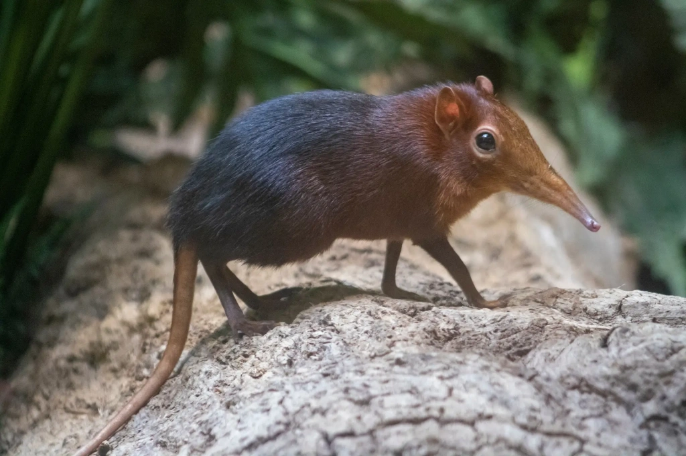
The elephant shrew (Macroscelididae) is a small animal that looks like a large mouse but carries the genes of an elephant. Despite its rodent-like appearance, it is genetically closer to African giants like elephants and manatees. This is because elephant shrews belong to an ancient African mammal group called Afrotheria, which also includes elephants.
Elephant shrews range from 10 to 30 cm (4 to 12 inches) in length, excluding the tail, and weigh between 25 and 700 grams (0.9 to 1.5 pounds), depending on the species. They are among the fastest small mammals, with some of the 18 known species reaching speeds of up to 28.8 km/h (about 18 mph).
Their most important tool is their long, flexible, and sensitive trunk-like nose, which helps them sift through leaves in search of insects, worms, and spiders. They move by hopping like rabbits, using their long legs and hunched backs. Their tails are scaly, with a gland at the base that secretes a musky scent to mark territory and deter predators.
Echidna
- Habitat: Australia and the island of New Guinea.
- Unique feature: A mammal that lays eggs and has reptilian characteristics.
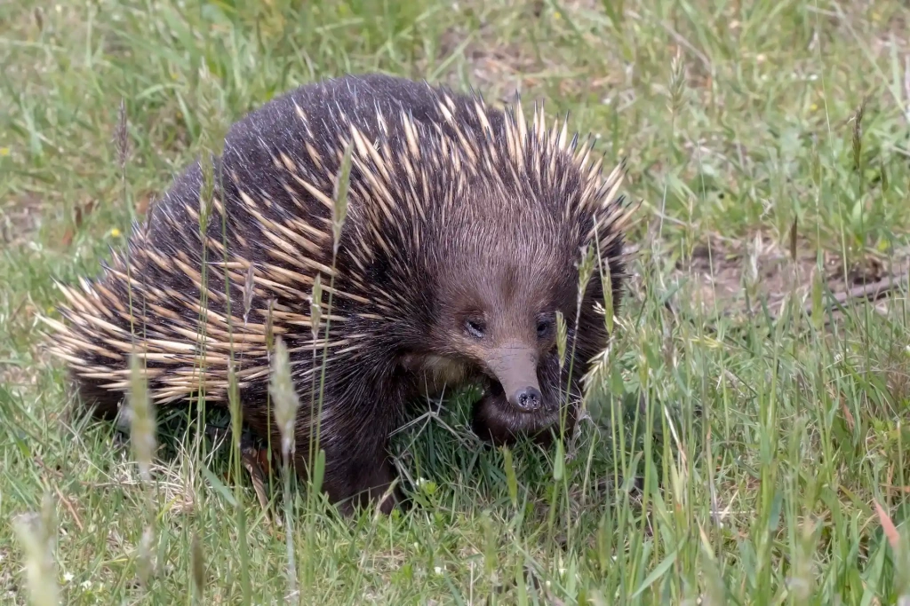
The echidna is a unique mammal with a long snout and a body covered in sharp spines, resembling a hedgehog. Its name comes from ancient Greek epic poetry, where “echidna” meant “viper.” When threatened, it curls into a ball, exposing its spines for protection, while powerful muscles beneath allow it to burrow quickly into the ground.
Instead of a typical mouth, the echidna has a long, sensitive snout full of nerve endings that help it locate insects underground. Like the platypus, it has no teeth: rigid, horny plates inside its mouth crush its prey. In a single day, an echidna can consume up to 200 grams (about 7 ounces) of food, roughly 20,000 ants or termites, despite its modest size, ranging from 30 to 75 cm (12 to 30 inches) in length and weighing 2.5 to 10 kg (5.5 to 22 pounds).
The echidna can also detect electrical signals from ants and worms through special electroreceptors on its snout. While not as finely tuned as those of the platypus, these sensors are highly effective for finding food underground.
“Both echidna and platypus are egg-laying mammals that diverged from other mammals about 180 million years ago. Echidnas can be found in a variety of habitats, including snowy alpine regions, rainforests, and deserts. They can survive fire fronts by digging into the ground and lowering their metabolism”, explains Dr Frank Grützner of the University of Adelaide.
Hammer-headed bat
- Habitat: Tropical forests of Western and Central Africa, ranging from Sierra Leone and Guinea in the west to Uganda and western Kenya in the east, including the Congo, Gabon, Cameroon, and other parts of the Congo River basin.
- Unique feature: Males have unusually shaped heads: large, with wide nostrils, a protruding forehead, and swollen leathery sacs on the sides.
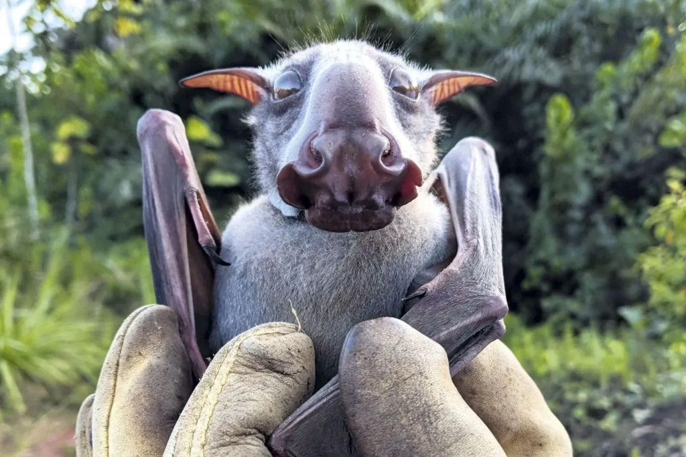
The hammer-headed bat (Hypsignathus monstrosus) is one of Africa’s largest bats, inhabiting the lowland forests of the continent’s western and central regions. Male wingspans can reach nearly one meter (about 3.3 feet), with weights up to 420 grams (0.93 lbs). Females are almost half as heavy, weighing 230–275 grams (0.51–0.61 lbs), and they lack the males’ most distinctive feature.
That feature is the male’s broad, massive head, complete with a protruding larynx, swollen lips, and air sacs: structures that produce powerful sounds audible hundreds of meters away.
Hammer-headed bats have a unique courtship system. Twice a year, up to 150 males gather in a designated area along riverbanks, clinging to branches, flapping their wings, and producing loud calls for hours. Females fly past, listening carefully and choosing mates based on the depth and resonance of their calls — the louder and more resonant the voice, the better the male’s chances.
“The larynx is one-half the length of the vertebral column and fills most of the thoracic cavity, pushing the heart, lungs and alimentary canal backward and sideways”, says the study in Mammalian Species on the Hammer-headed Bat.
Hoatzin
- Habitat: Tropical humid regions of South America, including the Amazon Basin (Brazil, Peru, Colombia), the Orinoco lowlands (Venezuela), Guyana, and Suriname.
- Unique feature: The only bird in the world that ferments its food in the crop, similar to a cow, and its chicks have claws on their wings, reminiscent of dinosaurs.
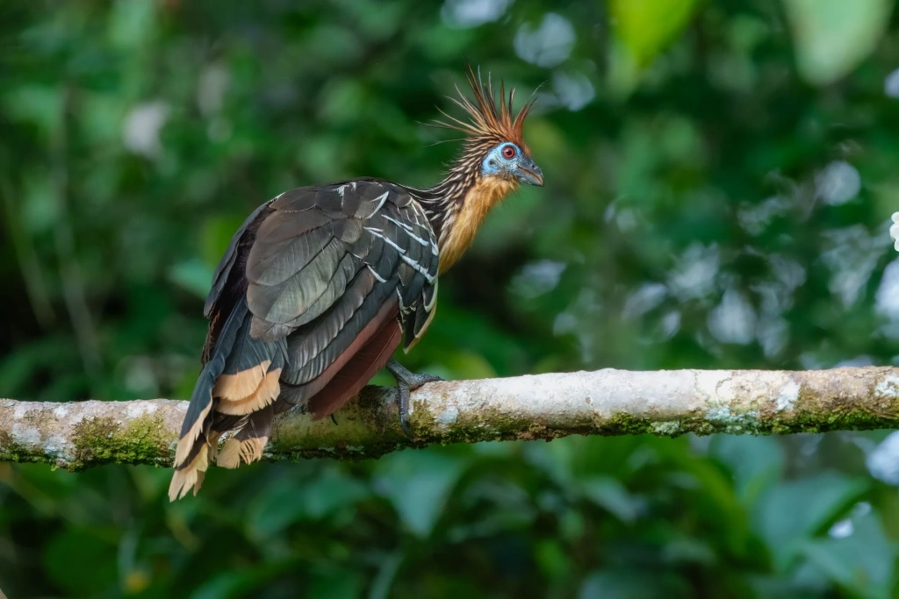
The Hoatzin (Opisthocomus hoazin) is roughly the size of a pheasant, with a reddish crest, bright red eyes, and bluish-pale facial skin. Its weird appearance, however, is not its most remarkable trait. Today, it is the sole member of its family and order, preserving several unique evolutionary features.
One striking example is found in Hoatzin chicks, which grow two sharp claws on each wing, a rare trait reminiscent of the ancient . When threatened, the chicks can dive into water and easily climb back to the nest by gripping branches with these claws. As they mature, the claws disappear, and the adult Hoatzin assumes a more typical bird appearance.
A 2015 genetic study in Nature suggested that the Hoatzin is the sole living member of an ancient bird lineage that split from all others about 64 million years ago. However, more recent research from 2024, published in PNAS, questions this conclusion. Experts now propose that the claws on Hoatzin chicks may have evolved more recently as an adaptation to life in tropical forests.
Hoatzins are also unique in their diet: they are the only bird species that feed exclusively on leaves. To extract enough energy, they have developed a complex, multi-chambered digestive system with several small “stomachs,” where beneficial bacteria ferment the leaves. This fermentation produces methane, which the birds release as a sharp, unpleasant odor, earning them the nickname “stinkbird.”
Cuban solenodon
- Habitat: Eastern Cuba, mainly in mountainous forests and ranges with a humid tropical climate.
- Unique feature: One of the few venomous mammals, using its saliva for hunting and defense, yet lacking immunity to its venom.
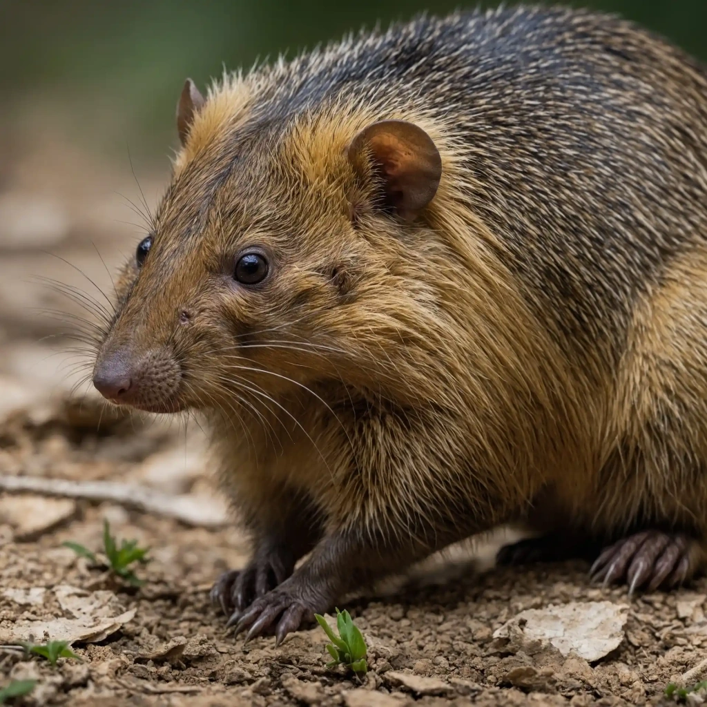
The Cuban solenodon, or almiquí (Atopogale cubana), is a rare member of the solenodon family (Solenodontidae). This small mammal measures from 16 to 22 cm (6 to 9 in) in length and typically weighs about 0.6 to 1 kg (1.3–2.2 lb). It has a slightly elongated head with a pointed snout, small eyes, partly hairless ears, and a nearly bare tail. Today, the species is considered endangered.
For decades, the Cuban solenodon was thought to be extinct: no sightings had been recorded for more than 80 years after the late 19th century, fueling legends of its disappearance. Then, in the 1970s, scientists rediscovered the species in Cuba, first finding three individuals, and later, in 2003, another one nicknamed Alejandrito. This specimen became the 37th officially recorded Cuban solenodon since the species was first described in 1861.
These animals retain many ancient, primitive traits. DNA evidence shows they diverged from other mammals about 78 million years ago. One of their most unusual characteristics is venomous saliva, similar to that of a snake, capable of paralyzing or killing small mammals, amphibians, and insects. Strikingly, the Cuban solenodon has no immunity to its venom, and individuals have been known to die after biting each other.
Aye-aye
- Habitat: Tropical and coastal forests of Madagascar.
- Unique feature: A slender, flexible middle finger used to tap on wood and locate larvae by sound.
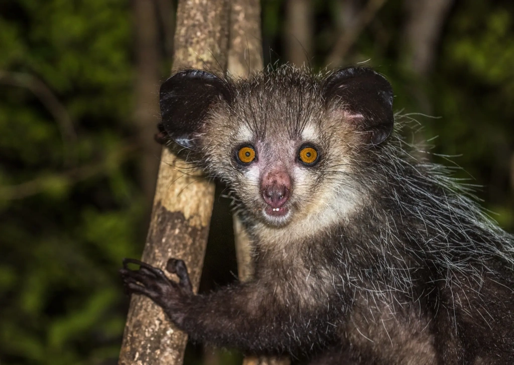
The aye-aye, sometimes called the Madagascar finger animal, is one of the most unusual primates. It has round yellow eyes for excellent night vision, large ears, long hooked fingers, and a bushy tail.
According to Live Science, the aye-aye is the largest nocturnal lemur in the world, averaging just under 2 kg (about 4.4 lb). As noted by WAWA Conservation, it also has continuously growing incisors, much like rodents, which help offset wear from gnawing on wood while searching for food.
The aye-aye’s most distinctive trait is its unusual hunting method, which involves tapping to detect prey inside wood, somewhat akin to echolocation. As Discover Wildlife describes, it taps its long, thin middle finger against wood at a rapid pace, up to eight times per second, listening for the hollow sounds that reveal insect larvae inside. Once it pinpoints its target, the aye-aye gnaws a hole and uses the same finger to pull the prey out.
In 2019, scientists reported an unexpected finding in the study “A primate with a Panda's thumb: The anatomy of the pseudothumb of Daubentonia madagascariensis.” The study also revealed that the aye-aye has an extra, sixth digit on each hand. This pseudothumb helps the primate keep a firm grip on branches as it moves through the trees.
All content on Angelino Adventures is created with expert insights and thorough research, in line with our Editorial Policy.


Want to know more about Tanzania adventures?
Get in touch with our team! We've explored all the top destinations across Tanzania. Our Kilimanjaro-based adventure consultants are ready to share tips and help you plan your unforgettable journey.
 Tanzania Safaris
Tanzania Safaris
 Kilimanjaro and other mountains
Kilimanjaro and other mountains
 About Tanzania
About Tanzania
 Tanzania Islands
Tanzania Islands